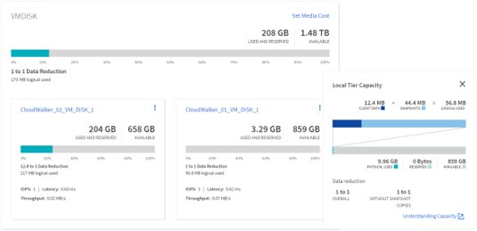
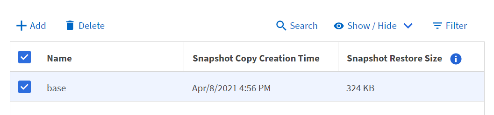

请求文档变更
请求文档变更 在 GitHub 上编辑
在 GitHub 上编辑 提供者指南
提供者指南System Manager 增强功能
随着 ONTAP 9.8 对 ONTAP 的 GUI 体验进行了改进，您可能已经注意到某些功能发生了移动或不再可用。在 ONTAP 9.1.1 中，我们收集了客户反馈，解决了有关 GUI 的一些问题，并重新添加了一些缺少的功能，同时添加了一些新增功能和改进的功能。下一节将介绍其中一些更改以及新增功能。您还可以在中找到有关 System Manager 的信息 "System Manager 文档"。
已还原功能 / 可用性增强功能
您提出要求，我们会认真倾听。在 ONTAP 9.1.1 中， ONTAP 9.8 System Manager 中不再提供的某些功能已重新添加到该产品中。此外，还提供了新的可用性增强功能。
在卷配置期间手动选择本地层 / 聚合
System Manager 9.9.1 允许您在配置新卷时手动选择要使用的物理存储层，包括在创建 FlexGroup 卷期间指定聚合的功能。您也可以选择允许 ONTAP 和 System Manager 根据平衡放置逻辑进行选择。
容量显示增强功能
现在，您可以在 ONTAP 中按 Snapshot 副本查看已用逻辑空间，以及查看使用和不使用 Snapshot 副本时的存储效率比率。
下图显示了 ONTAP System Manager 9.9.1 容量视图。

基于光纤通道的 NVMe —创建 LIF
现在，借助 System Manager ，您可以创建和查看通过光纤通道命名空间使用 NVMe 的 LIF ，包括端口状态，非对称端口选择以及查看每个端口创建的 LIF 数量，以帮助避免物理网络接口过载。
EMS 事件查看器—信息板
为了更快速地查看 ONTAP 集群中可能存在的问题， System Manager 9.9.1 会在您首次登录时在信息板上添加 EMS 事件。这包括过去 24 小时发生的错误，例如磁盘损坏，网络链路断开，许可证问题以及磁盘架或节点错误。
此外，您还会收到过去 24 小时的警告，包括发生故障的卷移动和运行状况监控器警报。
Snapshot 大小和 SnapMirror 标签
在 System Manager 的快照视图中，您可以在 SnapMirror 快照副本上查看快照大小和标签（例如每日，每周等）。

将数据 LIF 重新归位
在故障转移期间或网络中断得到解决后，数据 LIF 通常会保留在故障转移端口上，这可能会引起性能和故障恢复能力方面的潜在问题。如果您需要一种简单的方法将这些数据 LIF 发送回家， System Manager 9.9.1 现在提供了一种单击式方法，可以将所有数据 LIF 发送回其预期的主端口。
要显示 / 隐藏的新卷字段
您可以通过显示 / 隐藏按钮在 System Manager 9.9.1 中查看卷信息，其中包括本地层和可用 / 已用信息。
下图显示了 ONTAP System Manager 9.9 中的新卷视图。1.

批量操作
如果您需要执行多个卷移动或删除，将多个 LUN 映射到一个启动程序组或将多个卷添加到云层，则现在可以选择多个对象并执行任务。卷删除还可以在一个窗口中卸载，脱机并确认删除。
下图展示了 ONTAP System Manager 9.1.1 中简化的卷删除操作。

Active IQ 集成
为了使 ONTAP 用户可以通过一个访问点访问多个信息源， System Manager 9.9.1 可与 NetApp Active IQ 解决方案集成。这样可以提供固件建议以及直接从 NetApp 支持站点下载映像的方法，并可轻松访问支持案例视图，以便在您希望查看集群发生的情况时查看。只需导航到左侧菜单中 "Cluster" 下的 "Support" 链接，然后向 Active IQ 注册集群即可开始。
下图展示了 ONTAP System Manager 9.1.1 中的 Active IQ 视图。

硬件可视化平台扩展
硬件可视化包括平台型号，序列号，接管 / 交还状态，磁盘状态，端口信息等信息。ONTAP 9.9.1 增加了对硬件可视化的平台支持，以包括所有当前的 AFF 平台。

ONTAP 9.1.1 支持以下组件：
-
* 平台。 * C190/A220/ A250/ A300/ A400/ A700/A700s/A800/ A320/FAS500f
-
* 磁盘架。 * DS4243/DS4486/DS212C/DS2246/DS224C/NS224
-
* 网络交换机。 * Cisco Nexus 3232C/Cisco Nexus 9336C-x2
Ansible 攻略手册工作流
越来越多的企业开始使用 Ansible 等应用程序实现日常任务自动化，以提供可重复的无错误工作流。NetApp 提供了一整套 Ansible 攻略手册，您可以在中找到这些攻略手册以及更多信息 "Ansible for NetApp 页面"。
System Manager 9.9.1 增加了使用 Ansible 的其他途径，只需单击一下，即可通过一种新方法生成攻略手册。要使用这些攻略手册，请从安装 Ansible 和 NetApp 资料集 "Ansible Galax河"，但您可以通过单击 System Manager 中选择存储配置任务上的 Save to Ansible Playbook 链接开始创建攻略手册。

单击该按钮将创建一个 .zip 文件，其中包含 Ansible 所需的 .yaml 文件。

文件系统分析增强功能
在高文件数环境中，要查找有关文件夹容量，数据使用期限和文件计数的信息，通常需要使用时间密集型命令或脚本通过 NAS 协议运行串行操作，例如 ls ， du ， find 和 stat 。
ONTAP System Manager 9.8 通过为每个卷启用低影响扫描程序，为管理员提供了一种快速，轻松地查找任何 NAS 存储卷中的文件系统信息的方法。此扫描程序会在后台以低优先级作业搜索 ONTAP 文件系统，并在导航到启用了该文件系统的卷时提供大量信息。
启用 "文件系统分析" 与导航到要扫描的卷一样简单。转到 " 存储 ">" 卷 " ，然后使用搜索功能查找所需的卷。单击卷，然后单击资源管理器选项卡。
在此处，您将看到页面右侧的 "Enable Analytics" 链接。

单击启用后，扫描程序将启动。完成时间取决于卷中的对象数量以及系统负载。完成后，您会看到 System Manager 视图中填充了整个目录结构。此视图可在目录树下导航，并可用于访问历史记录信息，目录大小信息和文件大小。
ONTAP 9.9.1 为该功能提供了一些额外的增强功能，例如按文件或目录名称筛选以及执行 "快速删除目录"。
System Manager 9.9.1 的其他增强功能
ONTAP 9.9.1 还为 System Manager 提供了以下增强功能：
|
|